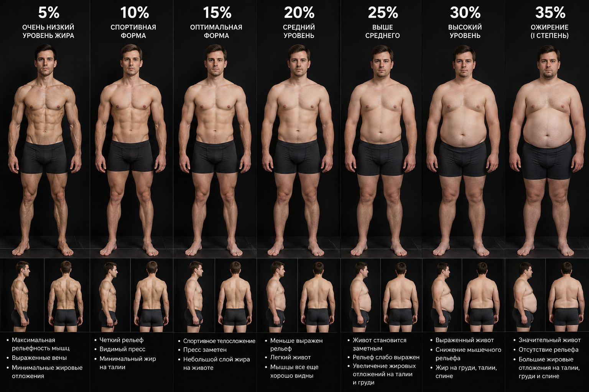

Три цифры, и приложение посчитает твоё КБЖУ и будет вести тебя по программе. Всё сохраняется в твоём Telegram.
Тапни на название, чтобы посмотреть технику. ★ — рекомендованный вариант на сегодня.
Найди картинку, где фигура больше всего похожа на твою. Таблицу можно листать в сторону.
